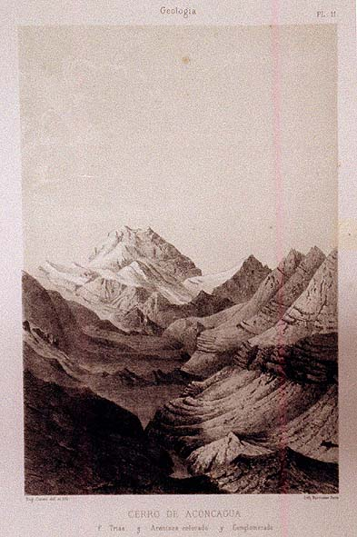

|
|  |
|
Aimé Pissis, Cerro de Aconcagua
|
Geographers such as the Frenchmen Aimé Pissis and Martin de Moussy and the German Ricardo Napp were commissioned by national committees in Chile and Argentina to compilate the landscapes and geographical features of the state, their works being published in lavish editions financed either directly by the state or through public subscriptions among urban aristocrats, to be circulated to learned societies in Europe and displayed at the great world´s fairs of Philadelphia (1876), Paris (1867 and 1889), or Chicago (1896).
|